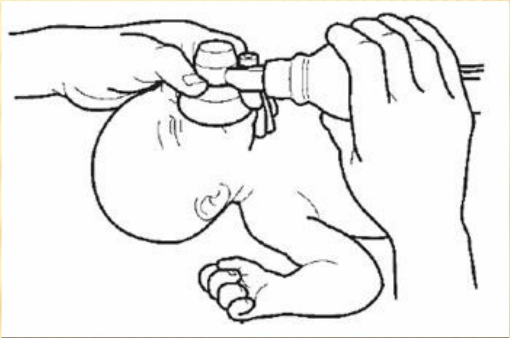

Neonatal Resuscitation and Respiratory Conditions
NEONATAL RESUSCITATION PROCEDURE
Temperature:
- Dry the baby, remove wet clothing and wrap baby in dry warm clothes. At the same time observe the baby's breathing, color and activity
- Place the baby on a firm warm surface or under a radiant heat warmer
Position baby's head in a neutral position (slightly extended position) to open airway.
Open airway
Suction -If there is meconium stained fluid and baby is not crying and moving limbs (Do not suck for more than 3 seconds)
- Suck only what you can see
- Suck the mouth and then the nose
- Suck only while withdrawing the catheter
Place mask to cover chin, mouth and nose
- Form a seal
- Squeeze bag attached to the mask with two fingers or whole hand about 30 to 50 times per minute
Watch chest for movement, do not over inflate, allow baby to breathe out. If chest is not rising:
- Reposition the head
- Check mask seal
- Squeeze bag harder
Start ventilation immediately using room air (bag and mask). If the baby does not improve then use oxygen
Pull the jaw forward towards the mask with the third finger of the hand holding the mask. Do not hyperextend the neck.
Circulation
Assess and count heart rate.
Chest compression
Using two fingers method, or thumb method compress the chest ( 1 cm below the line connecting the nipples and the sternum) pushing down 1.5 cm .
Give 90 compressions coordinated with 30 breaths per minute (3 compressions for every breath).
OVERVIEW
- Respiratory distress syndrome
- Asphyxia neonatorum
RESPIRATORY DISTRESS SYNDROME
LEARNING OBJECTIVES
- Explain the science behind RDS
- Be able to identify who is at risk of RDS
- State the signs of increased work of breathing
- Outline other causes of respiratory distress in a new born baby
- Discuss management of a baby with RDS
RESPIRATORY DISTRESS SYNDROME
- Also called the hyaline membrane disease
- This is a developmental disease of the preterm infant.
- pathophysiology - in RDS the alveolar and the ducts are filled with a sticky exudate, a hyaline material that prevents aeration.
This could be due to lack of surfactant that reduces alveolar ventilation and promotes atelectasis.
Reduction in alveolar surfactant may occur due to:-
- Immature cells lining the alveoli
- Decreased rates of production due to early neonatal stress
- Inadequate release of surfactant from the alveolar cells
- Death of cells producing surfactants.
SIGNS OF RDS
- Increased work of breathing
- Grunting
- Respiratory rate >60
- Cyanosis/low saturations
- Recession: subcostal, intercostal, sternal
- Head bobbing
- Nostrils flaring
- Apneas
- Symptoms typically worsen over first 48-72h
Investigations:
- Full hemogram / full blood count
- Blood culture
- Blood sugar
- X-ray where possible
TREATMENT
- Oxygen
- Intubation and ventilation
- Surfactant administration directly to the lungs
- Feeding support with NG feeds or IV fluids
- Antibiotics (incase respiratory distress due to infection)
NURSING CARE
- Administer oxygen using the appropriate delivery method
- If secretions are present use suction for brief periods using intermittent pressures
- Weigh the infant daily and monitor laboratory values as ordered
- For IV lines change tubing every 24 hrs
- Provide adequate calories per kg body weight
- Prepare to administer surfactant replacement therapy (instilled into the endotracheal tube).
NURSING CARE CONT...
- Provide nutrition
- Support bonding
- Provide realistic information to the parents
- Observe and report any signs of complications
PREVENTIVE MEASURES TO RDS.
- Prevent preterm labour if possible
- Give dexamethasone to the mother at least 48 hours before delivery
- Prevention of hypothermia at birth
- Prevention of perinatal asphyxia
- Adequate resuscitation
COMPLICATIONS
- Respiratory pneumothorax ,bronchopulmonary dysplasia
- C.V.S - hypotension, PDA,
- CNS - cerebral edema, intracranial hemorrhage, sepsis, renal failure
BIRTH ASPHYXIA
- Asphyxia means lack of oxygen
- Means that baby's organs don't get enough oxygen before, during or right after birth
WHERE CAN THE BABY SUFFER FROM ASPHYXIA?
- In Utero
- During Delivery
- After Birth
CAUSES OF ASPHYXIA
- Decreased placental flow e.g. cord prolapse
- Decreased placental gas exchange e.g. placental abruption, uterine rupture and placenta previa.
- Decreased placental perfusion
- Maternal hypoxia e.g. maternal seizure
- Inadequate postnatal cardiopulmonary circulation e.g. blocked airway
- Poor APGAR SCORE mostly indicates asphyxia and the infant goes into apnea.
- Poor placenta function that may occur with high blood pressure or in post-term pregnancies.
SIGNS AND SYMPTOMS
Before delivery, symptoms may include:
- Abnormal heart rate or rhythm
- An increased acid level in a baby's blood
At birth, symptoms may include:
- Bluish or pale skin color
- Low heart rate
- Weak muscle tone and reflexes
- Weak cry
- Gasping or weak breathing
- Meconium - the first stool passed by the baby - in the amniotic fluid, which can block small airways and interfere with breathing
ORGANS
- Brain - Hypoxic Ischemic Encephalopathy
- Kidneys - Poor urine output, Drugs e.g.. Gentamycin can have decreased clearance
- Liver - clotting problems
- Cardiac - impaired function
- Bowel ischemia
EXAMINATION
- Poor breathing effort
- Prolonged bleeding
- Poor urine output
- Neurological signs - depends on severity:
- Tone - Increased (stiff) or decreased (floppy)
- Level of consciousness - hyperalert , lethargic
- Reflexes
- Seizures
- Poor suck and difficulty feeding
- Lack of gag reflex
TREATMENT
Immediate management:
- Establish effective ventilation
- Assist circulation if necessary
Early management:
- Restrict fluids by 20% for first two days
- Monitor blood pressure and treat hypotension vigorously
- Assess respiratory effort and
- ventilate if baby breathing spontaneously with arterial carbon dioxide tension >7
- if baby ventilated maintain arterial carbon tension at 4.5
- If clinical signs of raised intracranial pressure give Mannitol 1g/kg over 20minutes and repeat if necessary every 4-6hours
Anticonvulsants
ASPHYXIA NEONATORUM
OVERVIEW
- Definition
- Pathophysiology
- Types of asphyxia
- Signs and symptoms
- Predisposing factors
DEFINITION
- Defined as the impaired respiratory gas exchange accompanied by the development of acidosis
- According to WHO, it is as a failure to initiate breathing at birth
PATHOPHYSIOLOGY
- Anaerobic metabolism
- Profound metabolic acidosis
- Persistence of apgar score of 0 to 3 beyond 5 minutes
- Clinical neurologic sequelae caused by Hypoxic ischemic encephalopathy (HIE)
- Multiorgan system dysfunction in the immediate neonatal period
TYPES OF ASPHYXIA
The degree of asphyxia is determined by apgar score.
An apgar score between 8-10 does not show asphyxia
There are three types:
- Mild asphyxia apgar score: 6-7 (at 5 minutes). It requires clearing of airway and application of external stimuli to initiate breathing.
- Moderate asphyxia: apgar score 4-5. it requires rescuscitation, administration of oxygen, and drugs to initiate breathing
- Severe asphyxia: apgar score 0-3. requires intensive resuscitative measures and intubation to survive
CLINICAL FEATURES
- Apnea
- Bradycardia
- Altered respiratory patterns (grunting, Gasping)
- Cyanosis
- Pallor
- Hypotonia
- Unresponsiveness
1. Mild and moderate asphyxia
- Apex beat (pulse) 100 / min or less
- Skin color is pink with blue extremities
- Response to stimuli may be present
- Cry may be weak or strong
- Makes effort to breathe and may gasp with irregular respiration
2. Severe asphyxia
- No attempt to breathe and may gasp periodically
- It does not cry
- Entire body skin is blue i.e. cyanosed
- No response to stimuli
- Pulse rate very low or absent
- Poor muscle tone
PREDISPOSING FACTORS
Depression of the central nervous system of the fetus is the most common basic cause for failure to breathe at birth. However there are also maternal and fetal factors
Maternal causes:
- Medical conditions e.g. chronic hypertension
- Antenatal conditions e.g. abnormal uterine contractions, antepartum hemorrhage, prolapsed cord, malpositions etc.
- Drug abuse
Fetal causes:
- Multiple pregnancies,
- Big baby with C.P.D
- Fetal anomalies e.g. anomalies of the lungs
NURSING MANAGEMENT
- Clear the airway as soon as the baby is born
- Nurse the baby in an incubator for at least 48 hours to keep it warm at body temperature
- Resuscitation may be needed to promote ventilation and ensure effective circulation to prevent acidosis, hypoglycemia and intracranial hemorrhage
- Do suctioning whenever necessary
- Closely observe the baby for skin color, TPR
- Administer oxygen by mask, ambu bag or nasal catheter whenever there is an apneic attack.
- Give iv fluids for rehydration
- Aspirate mucus to unblock the airway or may intubate the baby
- Give fluids with electrolytes to maintain fluid electrolyte balance
- If the mother was given narcotics during labor, administer its antidote, naloxone, through the umbilical vein
- Give anticonvulsants to control convulsions if present
- Maintain accurate input output charts to prevent overhydration or underhydration
- When the baby is stable, pass NG tube and start feeding
- Observe aseptic technique to prevent cross infection
- Administer broad spectrum antibiotics prophylactically
Drug administration
- Sodium bicarbonate $1-2 \mathrm{mls}$ to combat acidosis
- Vitamin K 0.5-1 mg i.m to prevent hemorrhagic disorders
- Aminophylline to improve respiration
- Calcium gluconate to strengthen heart muscles
- Administer broad spectrum antibiotics prophylactically
PREVENTION OF ASPHYXIA
- Proper screening of mothers to detect those at risk and advise on delivery in the hospital for proper management
- Pelvic assessment should be done at 36 weeks to rule out CPD
- Proper management of maternal diseases in pregnancy
- Drugs that depress respiratory centre e.g. sedatives, General anesthesia and narcotics should be avoided in late first stage.
- Early detection and management of fetal distress
- Clearing baby's airway as soon as the head is born
- Avoiding instrumental deliveries but rather prepare for c/s
COMPLICATIONS
- Renal abnormalities (50\%), e.g. azotemia, elevated creatinine levels, acute tubular necrosis
- Hypoxic Ischemic Encephalopathy (HIE)
- Brain damage
- Cardiac arrest
- Respiratory distress syndrome
- Respiratory acidosis